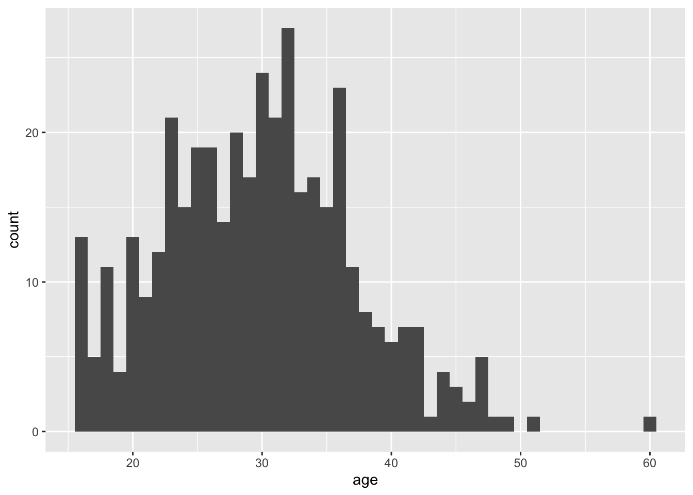
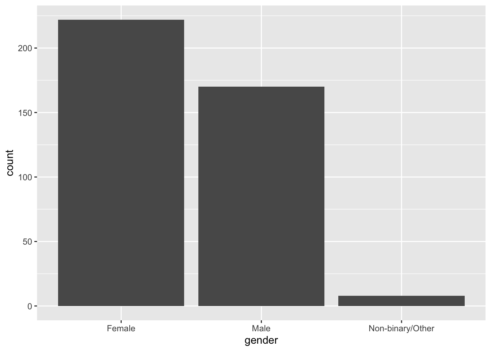
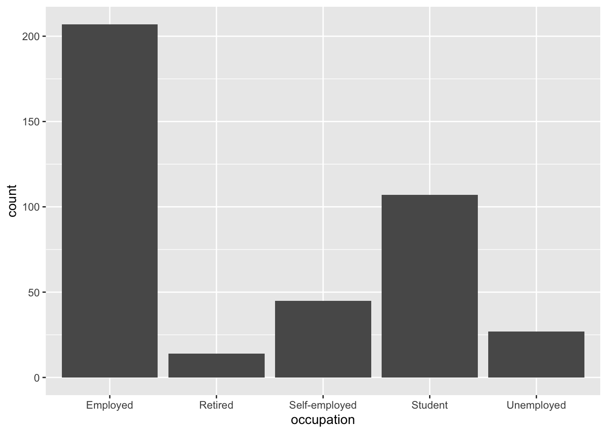
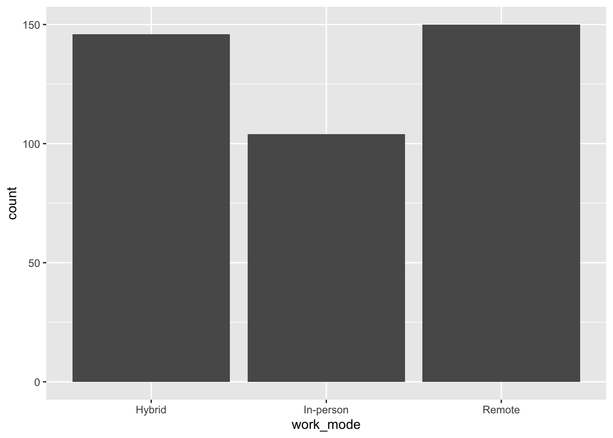
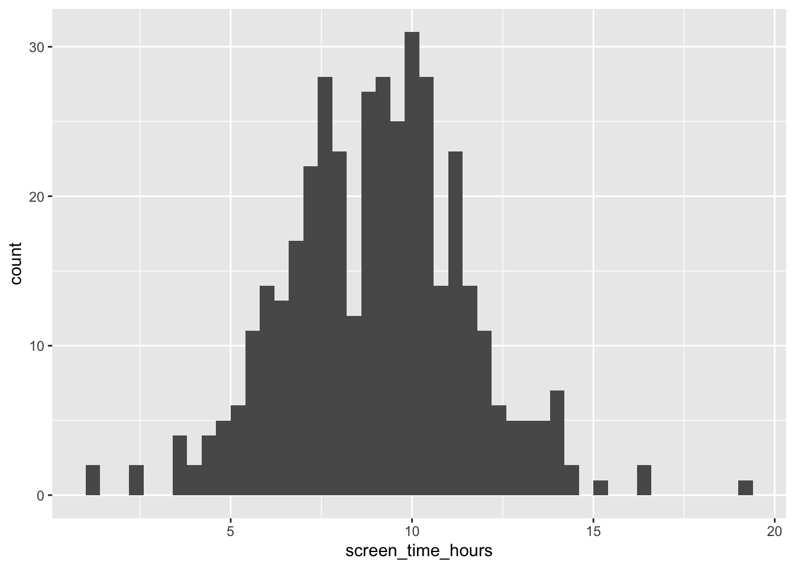
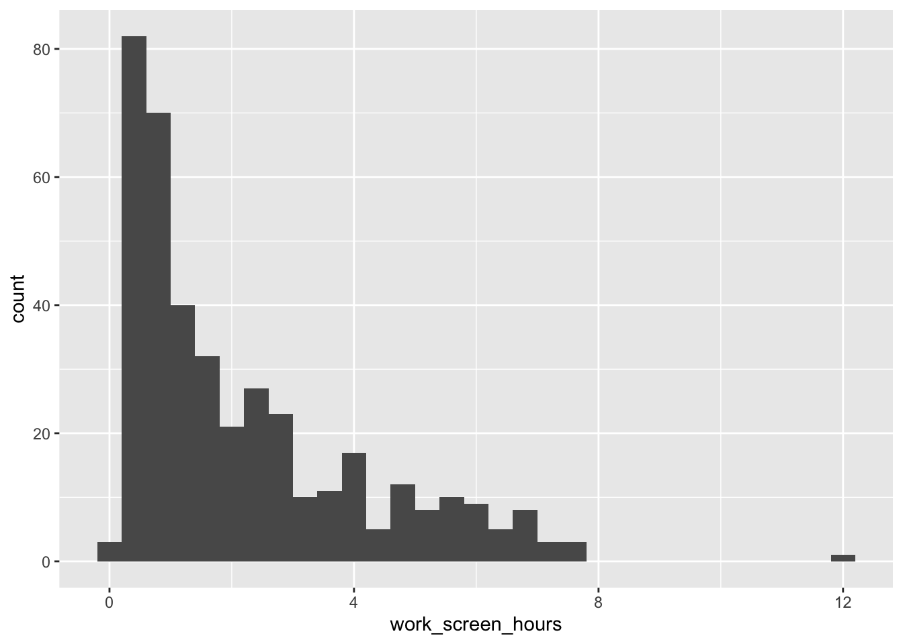
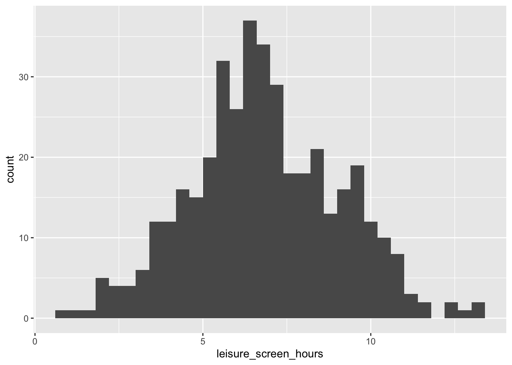
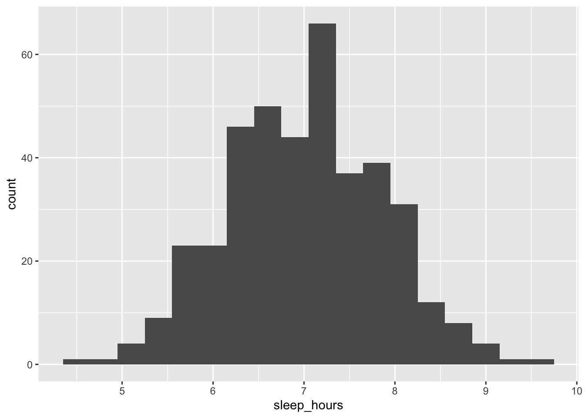
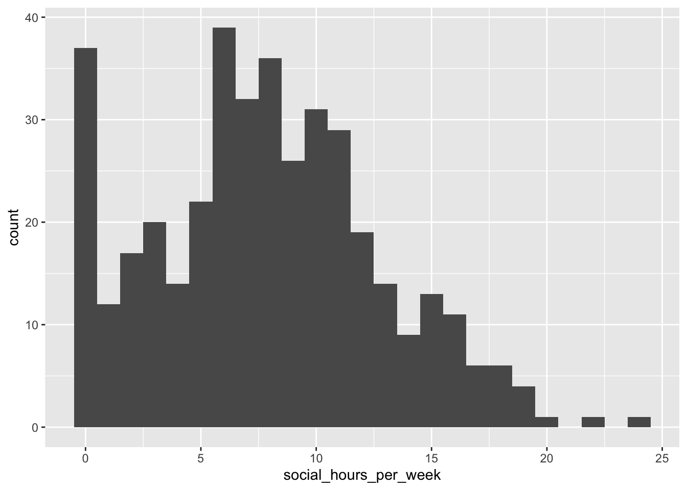
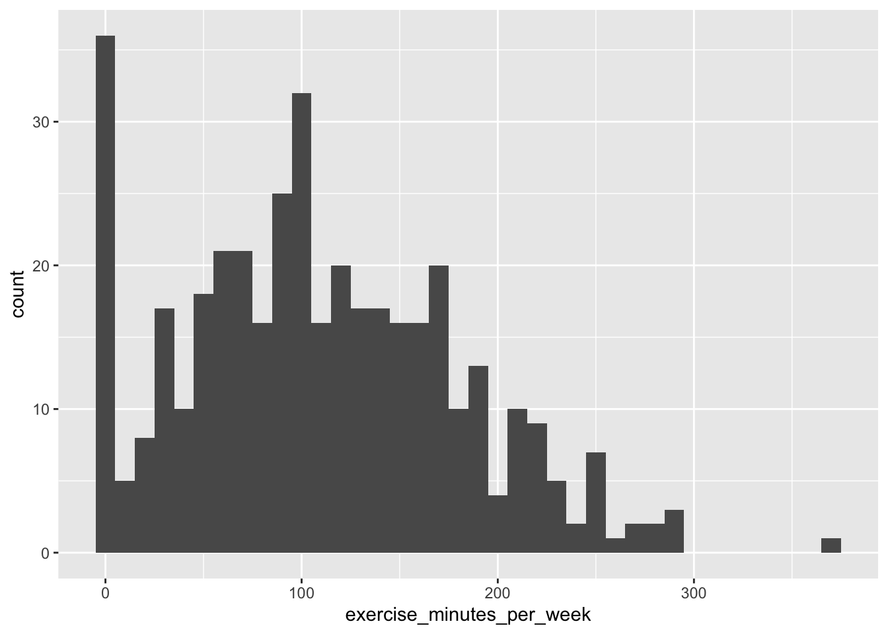

library(tidyverse)
library(ggplot2)
screen_time_data = read_csv("./data/ScreenTime-vs-MentalWellness.csv")
# View(screen_time_data)cleaning-eda
Data cleaning & Preliminary EDA
Data Provenance
This data was collected via a survey on 400 participants that was conducted by Adharshini Kumaresan around 6 months ago. It captures how their daily screen usage relates to mental wellness. Unfortunately, their page on Kaggle has very limited information about the sets provenance.
Variable names are already cleaned
# Dropping random column that gets generated when data is loaded
screen_time_data = screen_time_data |>
select(-"...16")Data Visualization
screen_time_data |>
ggplot(aes(x = age)) +
geom_histogram(binwidth = 1)
The average of participants age seems to be between 20s to late 30s, an age range where screen time would likely be much higher. There aren’t a lot of teens and no one below the age of 16 so we can’t apply our findings to children
screen_time_data |>
ggplot(aes(x = gender)) +
geom_bar()
There are more females than males in this dataset which may skew results when considering gender since it’s not a simple 50/50 split
screen_time_data |>
ggplot(aes(x = occupation)) +
geom_bar()
More employed people than every other category combined (likely do to age range). Might have an impact on later findings
screen_time_data |>
ggplot(aes(x = work_mode)) +
geom_bar()
Nothing super significant about this. Might just be a nice feature to evaluate later
screen_time_data |>
ggplot(aes(x = screen_time_hours)) +
geom_histogram(binwidth = 0.4)
The average daily screen time is around 8-10 hours which we find crazy. It’s important to note that screen time for this dataset all devices (mobile, laptop, TV, total). The next two features/variables are important to break this information down
screen_time_data |>
ggplot(aes(x = work_screen_hours)) +
geom_histogram(binwidth = 0.4)
Work screen time hours is very much skewed right with an average of approximately 0-2. This includes daily screen time spent on work/study tasks
screen_time_data |>
ggplot(aes(x = leisure_screen_hours)) +
geom_histogram(binwidth = 0.4)
Leisure screen time hours have an average around 7 hours per day. This includes social media, streaming, gaming, etc.
screen_time_data |>
ggplot(aes(x = sleep_hours)) +
geom_histogram(binwidth = 0.3)
The average sleep duration per night is around 7 hours
screen_time_data |>
ggplot(aes(x = social_hours_per_week)) +
geom_histogram(binwidth = 1)
This variable is only including socializing hours offline per week (so this wouldn’t include playing video games with friends). It’s shocking how high the count of 0 hours is and it will be interesting to see if this has any negative correlations to any other variables
screen_time_data |>
ggplot(aes(x = exercise_minutes_per_week)) +
geom_histogram(binwidth = 10)
This variable is skewed right with an average around approximately 100 minutes per week
Factoring & Re-ordering
screen_time_data = screen_time_data |>
mutate(occupation = factor(occupation, levels = c("Unemployed", "Student", "Self-employed", "Employed", "Retired")))
screen_time_data = screen_time_data |>
mutate(work_mode = factor(work_mode, levels = c("Remote", "Hybrid", "In-person")))Exporting Cleaned Data
write_rds(screen_time_data, "./data/cleaned_screen_time_data.rds")Investigating & Handling Missing Data
# View(screen_time_data)Fortunately for us, there is no missing data after cleaning, labeling, and reordering. There are a few columns with “0”s as a value, like for exercise_minutes_per_week, but that is a normal data point. It is just good to keep in mind what values our data are for future analysis.
Documenting Any Cases Excluded From Analysis
Since there was no missing data, and none of the data are outliers, there won’t be any rows excluded from our analysis. Thus, no code necessary for this step.
Joining Multiple Datasets
The dataset we are working with contains all of the variables we are interested in, with a sufficient amount of rows as well. Therefore, we do not need any additional data to conduct our analysis.
Analysis Plan
The goal of this analysis is to investigate any potential correlation between daily screen time and levels of mental wellness. We will explore relationships between total screen time and measures of physical/mental well-being, like stress levels, productivity, and sleep quality.
The main explanatory variables will be screen_time_hours, work_screen_hours, and leisure_screen_hours to investigate whether screen time affects mental well-being.
We will use a variety of visualizations, including boxplots, scatterplots, and bar graphs, to illustrate the relationship between screen time and mental well-being. A box plot showing the differences in screen time for people with each level of sleep quality would be interesting. Also, a scatterplot of screen time vs productivity level might show a positive/negative impact that screen time has on productivity.
Summary tables might show mean/median screen time hours, as well as averages for mental wellness, sleep quality, and productivity. These are helpful to establish a baseline from which we can evaluate any possible impact of increased/decreased screen time.
In terms of modeling and inference, we plan to use a lot of the strategies learned in class. Also, we might include a linear regression model to further investigate the relationship between screen time and exercise time on productivity / mental well-being. It would be interesting to see which variables are most/least impactful on general well-being, and that could help people decide what to prioritize in their life.